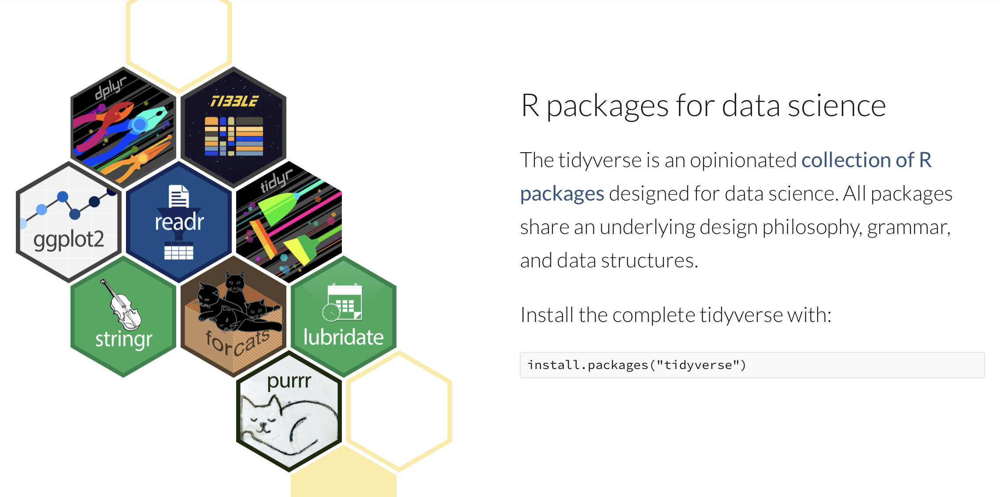
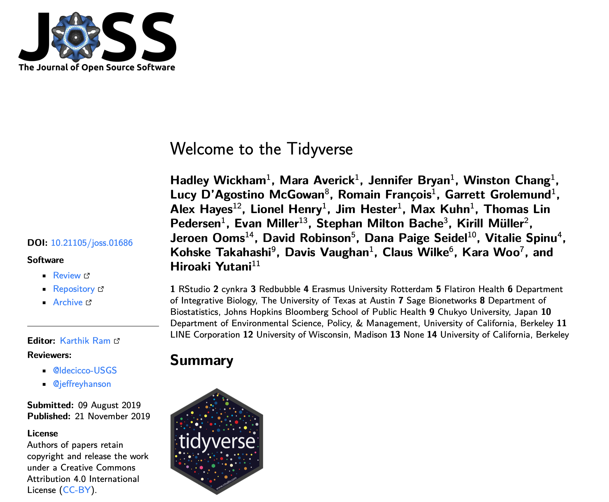
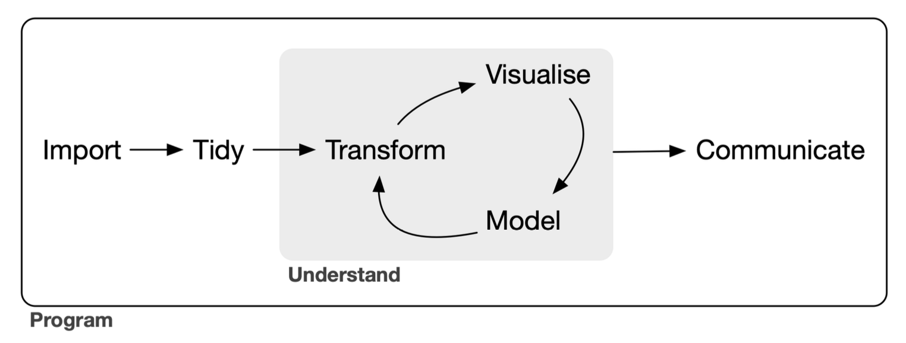
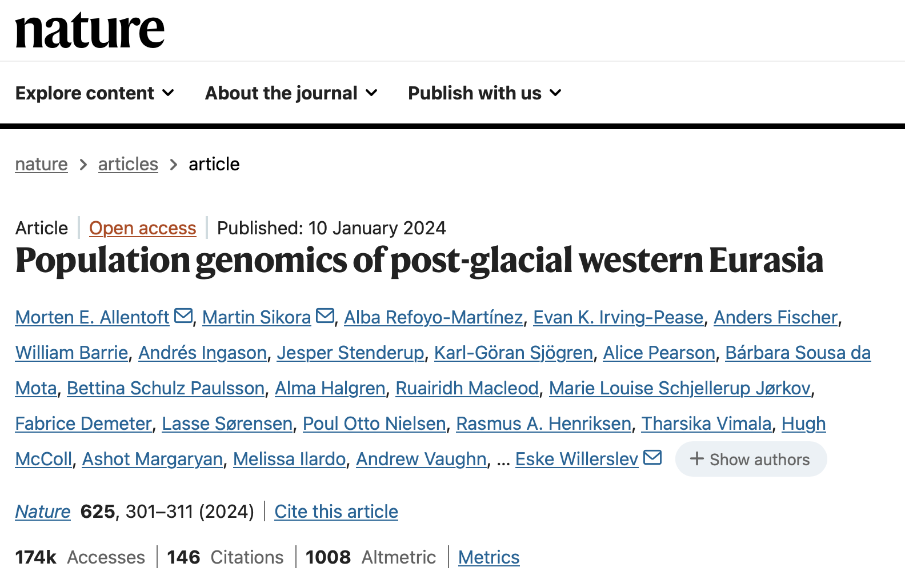
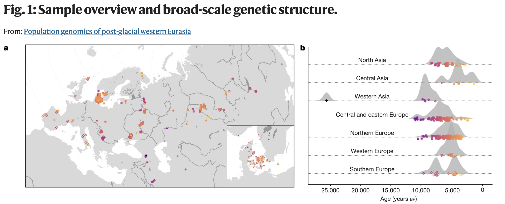

sample <- c("Loschbour", "UstIshim", "Saqqaq", "AltaiNeandertal")
coverage <- c(18.2, 35.2, 13.4, 44.8)
archaic <- c(FALSE, FALSE, FALSE, TRUE)Introduction to tidyverse
(A few remarks and tips before the practical session)
Quick recap from our R bootcamp yesterday
The motivation was to get familiar with the background of what makes a “data frame”.
Vectors and lists
- Vectors are collections of values of the same type:
- Lists are collections of anything:
An example of such a list of vectors…
An example of such a list of vectors…
Data frame is just that
Data frame is just that
sample coverage age
1 Loschbour 18.2 8050
2 UstIshim 35.2 45020
3 Saqqaq 13.4 3885
4 AltaiNeandertal 44.8 125000Indexing into tables: df[rows, cols]
Indexing by columns (“selecting columns”)
Indexing into tables: df[rows, cols]
Indexing by rows (“filtering rows”)
- using row numbers:
We can also extract columns with $
If df is our data frame:
sample coverage age
1 Loschbour 18.2 8050
2 UstIshim 35.2 45020
3 Saqqaq 13.4 3885
4 AltaiNeandertal 44.8 125000
The bootcamp was
“a trial by fire”
tidyverse makes everything we had to do
the hard way infinitely easier.

tidyverse.org
Nine “core” R packages and a “philosophy of data science design” which inspired many many more specialized packages.

link to the paperWhat is tidyverse?

The tidyverse is a language for solving data science challenges with R code. Its primary goal is to facilitate a conversation between a human and a computer about data. Less abstractly, the tidyverse is a collection of R packages that share a high-level design philosophy […] so that learning one package makes it easier to learn the next.
The tidyverse encompasses the repeated tasks at the heart of every data science project: data import, tidying, manipulation, visualisation, and programming.
This is still very abstract
In the spirit of hands-on interactivity, we will leave “theory” and practice work hand-in-hand during exercises.
Further companion study material

Let’s talk about our example data

“Western Eurasia witnessed several large-scale human migrations during the Holocene. Here, to investigate the cross-continental effects of these migrations, we shotgun-sequenced 317 genomes—mainly from the Mesolithic and Neolithic periods—from across northern and western Eurasia. These were imputed alongside published data to obtain diploid genotypes from more than 1,600 ancient humans [and about 2,500 present-day humans].”

Our exercises will focus on two MesoNeo data sets:
- Table of metadata information associated with each sample
- Genome-wide data set of Identity-by-Descent segments
Why those two data sets?
- Table of metadata information associated with each sample
- Genome-wide data set of Identity-by-Descent segments
- Best representatives of modern population genetic data
- Lots of opportunities to practice tidyverse data processing
- Even more opportunities to showcase ggplot2 possibilities
The main reason…
A great example of how to approach totally unfamiliar data!
True story.
Recently, I was given this exact data set. I had to find my way around it, and figure out how to build a project around it.
The exercises are retracing my own data exploration journey!
Let’s get started!
- Go to www.bodkan.net/simgen
- Click on “Introduction to tidyverse” in the left panel
- This session will focus on the metadata
- The next session “More tidyverse practice” digs into IBD data
- “Cheatsheets and handouts” section in the left panel has a single-page version of these slides and the dplyr cheatsheet
- Open your RStudio and start working!